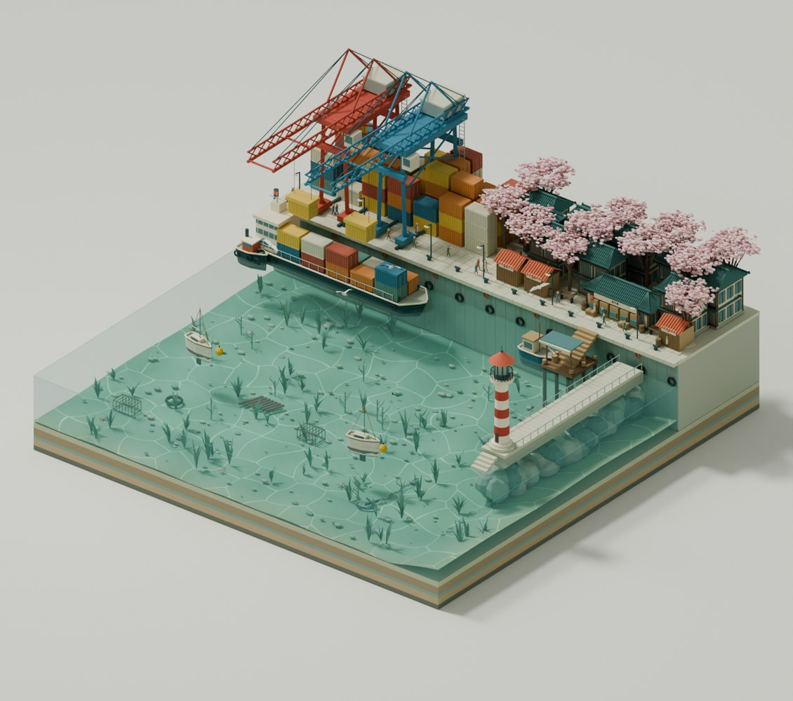
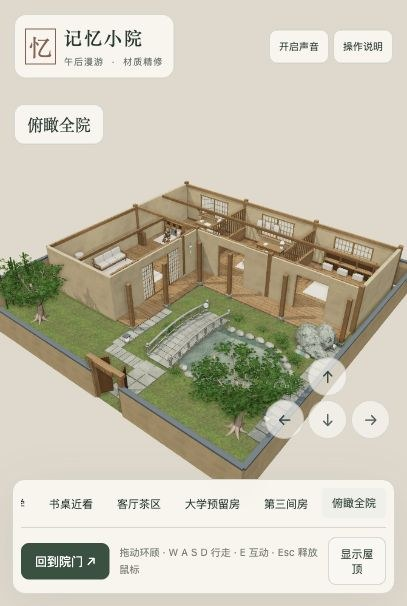
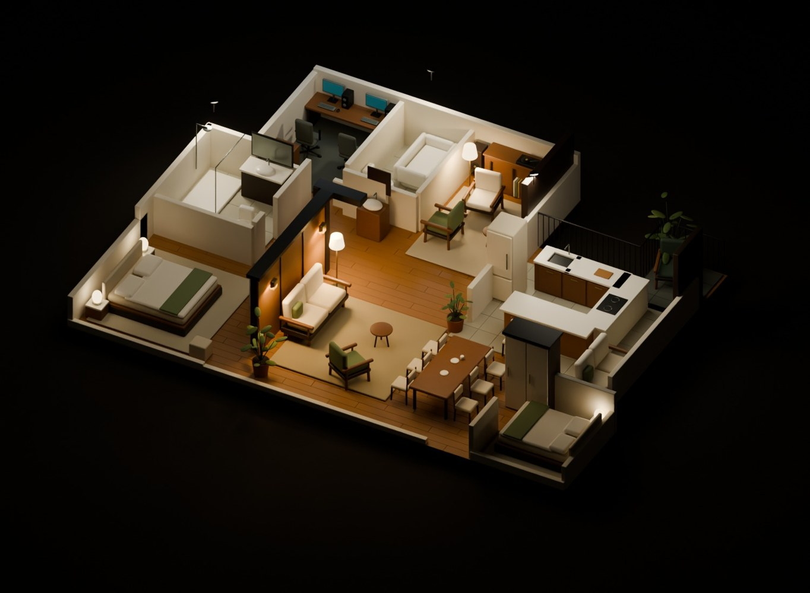

THREE PLACES TO GET LOST IN
选一个世界，
进去走走。
海风经过港口，午后落在小院，灯光留在房间。
三个由 Blender 搭建的场景，在浏览器里慢慢探索。

01 · 海风与樱花进入场景 ↗樱港
SAKURA HARBOR从码头到水下，跟着鱼群和海鸥逛一圈。

02 · 把午后留下进入场景 ↗记忆小院
MEMORY COURTYARD穿过小桥，推开纸窗，在书桌和茶席旁停留。

03 · 一盏灯，一个家进入场景 ↗暖夜公寓
AMBER ROOM先从上方看一眼，再走进暖色灯光里的房间。
怎么逛？
用鼠标拖动环顾，滚轮缩放。进入可漫游场景后，使用 W A S D 行走；按 Esc 释放鼠标。小院中靠近物件按 E 互动。触屏设备可使用场景内的移动控件。
首次进入会下载模型（约 13–52 MB），请稍等。建议用支持 WebGL 的现代浏览器打开。